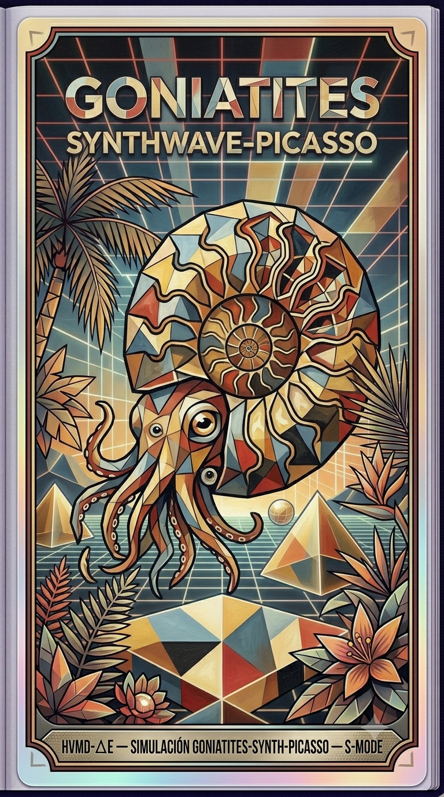

Paleoficha de Goniatites



TAXÓN:
Goniatites. Clado: Ammonoidea. Dieta: Carnívoro/Planctófago. Tamaño: 10–15 cm. Locomoción: Nectónica (propulsión a chorro).
TIEMPO:
Carbonífero superior, hace aproximadamente 320 Ma.
GEOGRAFÍA:
Mar epicontinental, cuenca Varisca. Plataforma continental somera.
ECOLOGÍA:
Algas calcáreas, fitoplancton diverso. Fauna asociada: Orthoceras, braquiópodos, crinoideos y Stethacanthus. Nicho: necton depredador/oportunista y bentos asociado.
CLIMA:
Wm10 (Marino costero tropical). Temperaturas cálidas estables, alta salinidad en zonas restringidas.
ESTADO ECOLÓGICO:
Elevada resiliencia y biodiversidad. Sistema maduro en equilibrio con alta productividad primaria.
Vídeo PalEntropía:
▶ Ver Short en YouTube